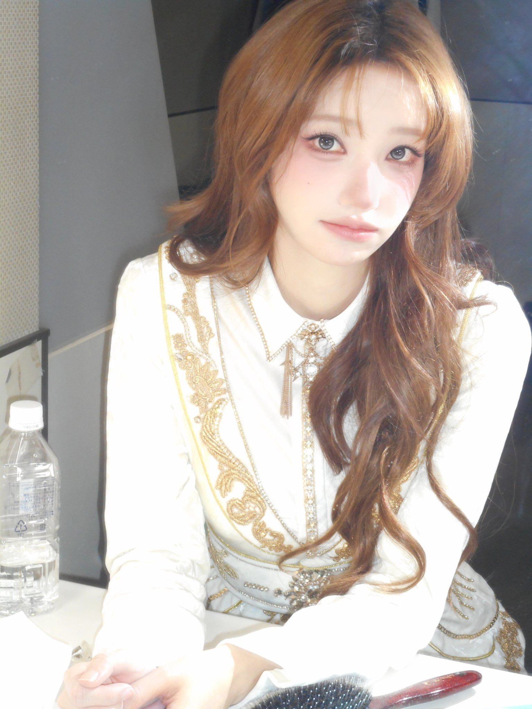

Magenta 是 QWER 的成員之一，主要擔任貝斯手。QWER 自 2023 年 10 月 18 日出道以來，逐漸以樂團形式受到關注，而 Magenta 也在其中展現出屬於自己的存在感。根據公開資料，她在加入 QWER 前就已經活躍於串流與內容創作領域，因此除了舞台表現之外，她的個人風格與鏡頭魅力也常成為粉絲注意的焦點。對我來說，Magenta 最吸引人的地方，不只是外表或造型，而是她站上舞台時那種能同時呈現俐落感與個人特色的氣質。

她在台上一直都很有氣場，尤其是她彈奏貝斯solo的時候，真的讓我非常印象深刻，我真的超喜歡Magenta的啦!
Magenta 最吸引我的地方，是她身上同時有溫柔感和鮮明風格。她的造型很有辨識度，不管是舞台上的妝髮、服裝，還是鏡頭前的表情，都能讓人一下子記住她。除了外表風格之外，她也有一種很自然的氣質，既不會太刻意，又能在很多畫面裡展現出自己的魅力，讓人越看越喜歡。
Magenta 帶給我的感覺，不只是好看而已，而是一種很特別的吸引力。每次看到她的表演或照片，都會讓我覺得心情變好，也會更想去注意她在舞台上的每一個細節。對我來說，她不只是 QWER 的成員之一，也是能讓人留下深刻印象、越認識越喜歡的存在。